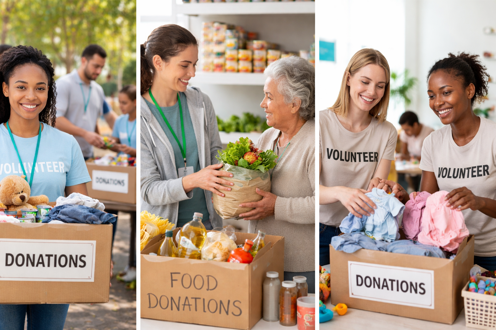

Red Solidaria es una plataforma que permite donar ropa, alimentos y medicamentos a fundaciones que realmente lo necesitan.

Crea una cuenta como donante o fundación.
Los donantes publican donaciones y las fundaciones pueden solicitarlas.
Las fundaciones aceptan donaciones y coordinan la entrega.